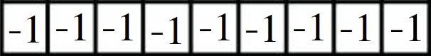
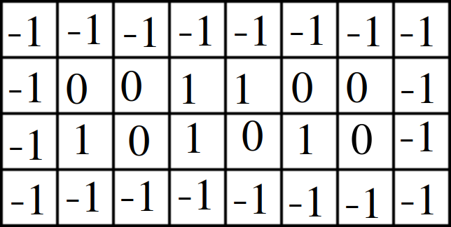
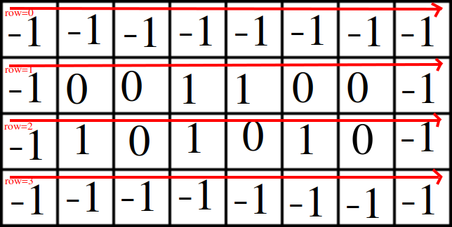

Functions Explained-¶
initGrid(rows, cols, array)¶
We have already learnt what this function does, but now let’s get into the how part.
So, it takes 3 arguments-
- rows- The number of rows in the 2D matrix
- cols- The number of rows in the 2D matrix
- array- which is simply a list which is going to hold the 2D matrix
When we come inside the function there is a for loop, which ranges from (i = 0) to (i = rows-1), when the first row starts, the control enter the block-
for i in range(rows):
Now when it is the first row, there is initialization of a new list, which is empty-
arrayRow = []
Now the control enters the inner loop, where this ranges from (j = 0) to (j = cols-1), and for every value of i, this inner loop executes from (j = 0) to (j = cols-1).
for j in range(cols):
Now the control goes inside the the definiton part, if it is the first row (i=0) or first column (j=0) or ‘last row’ (rows-1) or the last column (cols-1) then the list is appended with (-1) -
if (i == 0 or j == 0 or (i == rows - 1) or (j == cols - 1)):
arrayRow += [-1]
And now the else part, if values of i & j are anything other than the above specified values, then in the definition part of else, it generates random values from 0 to 3. If the value is 0, then it adds 1 to the row, else if it is any value either 1 or 2 or 3, it will append 0 to the row.
Values 1,2,3 are taken just to reduce the probablity of generating 0s. Just a note, 0 means a dead cell and 1 mean a live cell.
randint() is a function in the module random, which generates random numbers in a range eg- random.randint(0,3), generates numbers between 0 and 3.
else:
ran = random.randint(0,3)
if ran == 0:
arrayRow += [1]
else:
arrayRow += [0]
When the value of i is 0 or row-1 the whole row will be filled with -1.

And for every case values would be somehow like-

And at the end when the first row is to end, the row generated inside the inner loop is appended to the argument list array[].
array += [arrayRow]
And after the main loop has run some time, it will appear somehow like the picture below-

printGen(rows, cols, array, genNo):¶
As per inroduction this function prints the whole 2D matrix. Some let’s come to the definition part of this function-
This function clears the screen for the next thing to get printed. The function system(“clear”) is present in the module os.
os.system("clear")
In windows “clear” should be replaced with “cls”.
Next statement simply prints the current generation,
Here is something that is to be noted down that we are trying to concatenate a string and a number which is not possible. So we need to typecast the number into a string e.g- str(number)
print("Game of Life -- Generation " + str(genNo + 1))
Now, the control moves to the for loop which runs from i = 0 to i = rows-1 and for every i, the inner loop runs from j = 0 to j == cols-1,
for i in range(rows):
for j in range(cols):

The inner loop contains below statements to be executed. If the list at the ith and jth position contains-
-1, then # will be printed, which represents the boundary
1, then O will be printed, which represents a live cell
0, then a space will be printed, which represents a dead cell
if array[i][j] == -1:
print("#", end="")
elif array[i][j] == 1:
print("O", end="")
else:
print(" ", end="")
Now, after every row has been done printing completely we moved to the next line.
print("")

P.S- Keep a note that we have just printed the 2D matrix and not changed the values of the list.
processNextGen(rows, cols, cur, nxt):¶
As the name suggests this function processess the 2D matrix for the next generation. cur (also referred as current) and nxt (also referred as next) are thisGen[] and nextGen[] respectively.
Coming to the block part, there are again two nested loops, for the first loop value of i ranges from i = 1 to i = rows-2 and for each value of i the inner loop ranges from j = 1 to j = cols - 2.
P.S- As, first and last row and first and last column represents the boundaries, hence no changes will be there in next generation.
for i in range(1,rows-1):
for j in range(1,cols-1):
Now for every value of i and j, there is a cell whose existence depends on the surrounding cells, and each need to be processed separately and to achieve that there is a separate function named processNeighbours().
nxt[i][j] = processNeighbours(i, j, cur)
processNeighbours(x, y, array):¶
According to the rules, the existence or birth or death of a cell depends upon the the no. of neighbours a cell has.
So, we need to count the no. of neighbours a cell has. So, we initialized a variable with initial count to be zero i.e nCount = 0.
nCount = 0
Now comes a for loop for which j ranges from j = y-1 to j = y+1 and for each value of j, the inner loop ranges from i = x-1 to i = x+1.
for j in range(y-1,y+2):
for i in range(x-1,x+2):
And the condition is if i is not equal to x and at the same time j is not equal to y, i.e we have to neglect the concerned cell, as cell can’t be its own neighbour.
if not(i == x and j == y):
And at the same time, we should keep in mind that, it may not be a boundary block, so-
if array[i][j] != -1:
Then the following statement will be executed-
nCount += array[i][j]
P.S- If the list at position i & j contains a dead cell i.e array[i][j] = 0 addition doesn’t cause any issue. If array[i][j] = 1 then nCount will be increased by 1.

Now the time for survival/Death-
If the cell is live, and it has neighbours less than 2, then it will die because of loneliness.
if array[x][y] == 1 and nCount < 2:
return 0
If the cell is live, and it has neighbours greater than 3, then it will die because of overpopulation.
if array[x][y] == 1 and nCount > 3:
return 0
If the cell is dead, and it has 3 neighbours, then it will take birth according to the rules.
if array[x][y] == 0 and nCount == 3:
return 1
And if it is none of the above case, then this function will return the same content.
else:
return array[x][y]